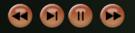

Hand Playback
Hand Playback allows you to watch a hand or session of hands
from your hand history using CD player style controls. Hand Playback
can be useful for going over hands in your Hand History to
evaluate and analyze your own actions or the actions of others.
During playback, all known cards are shown face-up.
As play proceeds a percentage is displayed by the cards of active players.
This percentage represents the player's equity in the pot, or in other
words the percentage of times they would win the pot on average if
there were no future betting actions and all future board cards were rolled
out. These percentages are either the result of a 10,000 trial simulation
or the result of an an enumeration in the case where no more than 10,000
enumerations are needed. For this calculation unknown cards are assumed to all
be equally likely.
Invoking Hand Playback
Hand Playback can be invoked using the Hand Playback icon
that you can find on windows that are part of the Player Statistics System.
For example, from the Player Statistics System you can choose to watch
a single selected hand from your hand history or you can watch all hands from
one or more selected sessions.
It is important to note that Hand Playback
can only be invoked if you are not currently playing at the same time. If you
are in the middle of a hand, you will need to abort the hand in order to actually
watch a hand. If you are outside of hand but sitting at a poker table as
part of a ring game, tournament game, or online game, you will be silently
removed from those games if you invoke Hand Playback. In the case of a
tournament game, your tournament game will be automatically saved and marked as
unfinished so that you can resume it after you are done with Hand Playback.
In the case of a ring game, you will need to restart your ring game when you
want to go back to it. In the case of an online game, you would be disconnected
and you would have to manually reconnect after you are done with Hand Playback.
Hand Playback Controls
The Hand Playback Controls are designed to be similar to the controls you
would see on a CD player. The controls are as follows (in order from left to right):

- Previous Hand Button
- Goes back to the start of the previous hand. This means
if you are in the middle of a hand, clicking this button takes you to the start of the
previous hand and not the start of the current hand. If you want to go to the start of
the current hand, you have to click the Previous Hand Button followed by the
Next Hand Button.
- Step Button
- Steps you through a hand step by step.
- Play/Pause Button
- Toggles you between play and pause mode. When
in play mode, play automatically proceeds step by step using your preferred
Action Throttles and Showdown Throttles
(see Throttles for more information on the
throttles themselves). When in pause mode, play does
not proceed unless you press the Step Button or toggle this button
back to play mode.
- Next Hand Button
- Skips all remaining play in the current hand and takes you to
the start of the next hand.